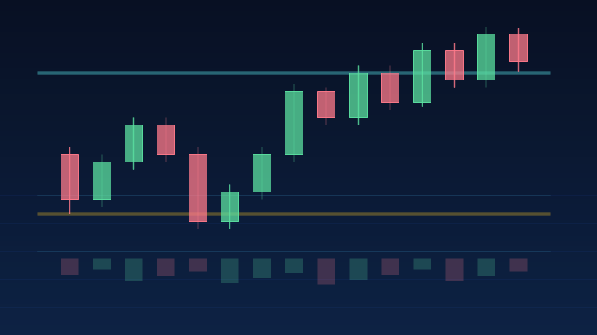

4.1 Karakteristik Kripto sebagai Produk Investasi
Likuiditas 24/7
Berbeda dari pasar saham, pasar kripto tidak pernah tidur — 24 jam, 7 hari, termasuk akhir pekan. Fleksibel, tetapi harga bisa bergejolak saat Anda tidak memantau.
High Risk, High Return
Sangat fluktuatif. Potensi keuntungan bisa melampaui instrumen tradisional, tetapi potensi kerugian pun setara. Naik/turun puluhan persen dalam waktu singkat adalah hal biasa.
Peran dalam Portofolio
Pendekatan umum bagi pemula: jadikan bagian kecil diversifikasi — sering disebut kisaran 5–20% dari kekayaan bersih, sesuai profil risiko. Sisanya pada instrumen lebih stabil.
Hanya investasikan “uang dingin” — dana yang Anda relakan jika nilainya menjadi nol, dan yang tidak dibutuhkan dalam waktu dekat. Jangan pernah menggunakan dana kebutuhan pokok, dana darurat, uang pendidikan, apalagi uang pinjaman.
4.2 Siklus Pasar (Market Cycle)
Pasar kripto bergerak dalam siklus berulang. Mengenali fase-fasenya membantu Anda mengelola ekspektasi dan emosi.
📈 Bull Market (Pasar Naik)
Periode optimisme tinggi ketika harga naik berkelanjutan. Suasananya euforia, tampak “semua orang untung” — justru di sinilah risiko FOMO paling besar.
📉 Bear Market (Pasar Turun)
Periode pesimisme — sering dijuluki “crypto winter” — ketika harga turun drastis, bisa 70–80% dari puncak. Secara historis fase ini juga jadi titik akumulasi bagi investor berdisiplin.
Siklus pasar & emosi interaktif
Klik / arahkan kursor ke tiap titik untuk melihat fase & emosinya. Mengenali fase membantu mengelola ekspektasi — bukan memprediksi waktu persis.
4.3 Bitcoin Halving
Halving adalah peristiwa terjadwal dalam kode Bitcoin, terjadi kira-kira setiap empat tahun. Pada momen ini, imbalan yang diterima penambang untuk setiap blok baru dipangkas setengahnya — laju penciptaan Bitcoin baru melambat.
Pemangkasan imbalan blok dari waktu ke waktu
Secara teori ekonomi sederhana, jika pasokan baru berkurang sementara permintaan tetap atau naik, terjadi tekanan kenaikan harga — fenomena yang disebut supply shock. Secara historis, periode setelah halving sering dikaitkan dengan tren kenaikan harga.
Perlu ditegaskan: pola masa lalu bukan jaminan akan terulang. Halving adalah salah satu bagian dari narasi siklus empat tahunan Bitcoin, bukan sinyal beli/jual.
4.4 Tiga Pendekatan Analisis
Untuk menilai sebuah aset, ada tiga lensa analisis yang saling melengkapi. Investor yang matang biasanya tidak bergantung pada satu saja.
Analisis Fundamental (FA) — “Apakah ini proyek layak?”
Menilai nilai intrinsik dan prospek jangka panjang sebuah proyek. Aspek yang ditelaah:
- Whitepaper & visi — apa masalah yang dipecahkan, apakah solusinya masuk akal?
- Tim & pengembang — siapa di baliknya, kredibel & transparan? (Tim anonim perlu dicermati.)
- Use case & adopsi — apakah ada kegunaan nyata dan pengguna yang benar-benar memakai?
- Tokenomics — bagaimana struktur pasokan dan distribusinya (lihat Bab 3.7)?
- Komunitas & aktivitas pengembangan — seberapa aktif komunitas & sesering apa kodenya diperbarui (mis. GitHub)?
- Kemitraan & roadmap — apakah ada kerja sama nyata dan rencana yang jelas?
Analisis Teknikal (TA) — “Kapan momen yang lebih baik?”
Mempelajari pergerakan harga dan volume historis melalui grafik untuk mengidentifikasi pola dan kecenderungan.
Support & Resistance
Support = level di mana tekanan beli cenderung muncul (lantai); resistance = level di mana tekanan jual cenderung muncul (atap).
Tren (Trend)
Arah umum harga: naik (uptrend), turun (downtrend), atau menyamping (sideways).
Candlestick
Grafik lilin menampilkan harga buka, tutup, tertinggi, dan terendah dalam satu periode; polanya membaca sentimen.
Indikator Populer
MA meratakan tren; RSI mengukur jenuh beli/jual; MACD membaca momentum; Volume mengukur kekuatan pergerakan.
Support & Resistance skema
Harga cenderung memantul di antara support dan resistance. Ini alat probabilitas, bukan ramalan pasti — selalu sertai manajemen risiko.

Analisis teknikal bukan ramalan pasti, melainkan alat probabilitas. Trader disiplin selalu memakai stop-loss, membatasi risiko per posisi (umumnya 1–2% dari modal), dan mengincar rasio imbalan terhadap risiko yang sehat (mis. minimal 2:1). Tanpa manajemen risiko, analisis sebaik apa pun tidak berarti.
Analisis On-Chain — khas kripto
Karena seluruh transaksi tercatat publik di blockchain, kita bisa menganalisis perilaku jaringan secara langsung. Metrik yang sering dipakai:
- Active Addresses — jumlah alamat aktif, indikasi tingkat penggunaan jaringan.
- Exchange Inflow/Outflow — aliran aset masuk/keluar bursa; arus masuk besar sering ditafsirkan sebagai potensi tekanan jual.
- Whale Activity — pergerakan dompet besar (“paus”) yang bisa memengaruhi pasar.
- MVRV & NVT — rasio valuasi untuk menilai apakah aset relatif “mahal” atau “murah”.
Metrik on-chain bersifat lagging (cenderung mengonfirmasi setelah hal terjadi) dan harus dibaca sebagai konteks, bukan sinyal jual-beli tunggal.
4.5 Sentimen Pasar & Metrik Tambahan
Fear & Greed Index
Merangkum sentimen pasar dalam satu angka 0–100, dari “extreme fear” hingga “extreme greed”. Filosofi kontrarian yang sering dikutip: waspada saat pasar terlalu serakah, pertimbangkan peluang saat pasar terlalu takut. Sumber populernya alternative.me.
Skala Fear & Greed Index skema
Filosofi kontrarian: waspada saat terlalu serakah, pertimbangkan peluang saat terlalu takut. Nilai live bisa ditarik dari API pada slot di bawah.
Market Cap vs Fully Diluted Valuation (FDV)
Market cap = harga × pasokan beredar saat ini. FDV = harga × total pasokan maksimal (seolah semua token sudah beredar). Jika FDV jauh lebih besar dari market cap, banyak token belum beredar dan akan masuk pasar — berpotensi menimbulkan tekanan dilusi terhadap harga.
Bitcoin Dominance & Altseason
Bitcoin dominance mengukur porsi nilai Bitcoin terhadap total pasar. Ketika dominasi menurun dan dana mengalir deras ke altcoin, periode itu sering disebut “altseason”. Metrik ini membantu membaca ke mana arus modal bergerak.
4.6 Strategi Investasi
DCA (Dollar Cost Averaging) — Andalan Pemula
Strategi membeli aset dalam nominal tetap secara rutin dan berkala, tanpa peduli harga naik atau turun. Rumusnya: investasi rutin + nominal sama + jangka panjang. Tujuannya meratakan harga beli, sehingga Anda tidak perlu menebak “waktu terbaik” dan terhindar dari jebakan emosi.
| Pendekatan | Cara | Hasil |
|---|---|---|
| Cara keliru (FOMO) | Membeli dalam jumlah besar sekaligus saat harga di puncak karena takut ketinggalan | Rentan membeli di harga termahal |
| Cara sehat (DCA) | Membeli nominal kecil secara konsisten di tanggal tetap, apa pun kondisi harga | Harga beli rata-rata lebih terkendali |
DCA paling cocok untuk aset yang Anda yakini punya prospek jangka panjang sehat. Strategi ini mengurangi risiko emosi dan membeli di harga terlalu tinggi, tetapi tidak menghilangkan risiko pasar.
Strategi Lain (Pengayaan)
DCA vs beli sekaligus saat puncak skema
DCA menyebar pembelian di berbagai harga sehingga rata-rata beli lebih terkendali — menghindari jebakan menebak “waktu terbaik”.
HODL
Memegang aset jangka sangat panjang dengan keyakinan pada prospeknya, mengabaikan gejolak jangka pendek. (Berasal dari salah ketik “hold”.)
Swing Trading
Memanfaatkan ayunan harga jangka menengah; menuntut keterampilan TA & manajemen risiko baik — jauh lebih berisiko bagi pemula.
Portfolio Rebalancing
Menyeimbangkan kembali komposisi portofolio secara berkala ke target alokasi semula.
Take-Profit Strategy
Menetapkan rencana kapan & berapa keuntungan direalisasikan sejak awal, agar keputusan tidak didikte euforia.